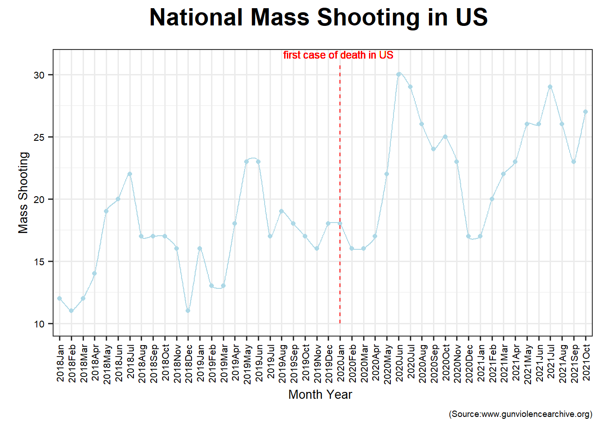

This project is overall motivated by two gun violence incidents in 2021 in which two Chinese students were killed brutally. As a team of Chinese, we feel grief-stricken for our compatriots’ death and it motivates us to question and investigate the safety issues when studying in the U.S as international students. Under this circumstance, our group members are inspired to study gun violence and explore the relationship between gun crime rate and Covid-19 outbreak.
The Washington Post: “2020 was the deadliest gun violence year in decades. So far, 2021 is worse.”
The Washington Post: “Shootings never stopped during the pandemic: 2020 was the deadliest gun violence year in decades”
Nydailynews: “Surging COVID-19 cases threaten to send NYC and US economy into second tailspin”
USNEWS: “Suspect Charged in Death of University of Chicago Student”
The questions for this project are based on three datasets listed in the next section:
1.What is the national and state change of the number of mass-shooting incidents in recent years? Which states have more mass-shooting incidents and reasons behind such differences between different states?
2.What is the fluctuation of unemployment rate before and after the outbreak of the epidemic? Whether the number of mass shooting incidents has a relationship with the unemployment rate?
3.Is it possible to build a precise model to predict the number of mass-shooting in Illinois in 2022 with the data collected?
Gun Violence Archive – (https://www.gunviolencearchive.org) NYC OpenData – (https://opendata.cityofnewyork.us/) Bureau of Labor Statistics – (https://www.bls.gov/)
This dataset collects every mass-shooting incident that occurred from November 2017 to November 2021 in the US. According to Gun Violence Archive, definition of mass-shooting is that in one gun violence incident, there is a minimum of four victims shot, either injured or killed, not including any shooter who may also have been killed or injured in the incident.
The data was first imported into R and we renamed some of the variables. Since the data for 2017 is too small, we decided to remove them and only keep the data from January 2018 to November 2021. In order to study the victims in mass-shooting from 2018 to 2021, we counted the number of killed and injured in different states every year and created two new variables.
List of every shooting incident that occurred in NYC during the current calendar year. This is a breakdown of every shooting incident that occurred in NYC during the current calendar year. This data is manually extracted every quarter and reviewed by the Office of Management Analysis and Planning before being posted on the NYPD website. Each record represents a shooting incident in NYC and includes information about the event, the location and time of occurrence. In addition, information related to suspect and victim demographics is also included. This data can be used by the public to explore the nature of police enforcement activity. Please refer to the attached data footnotes for additional information about this dataset.
First, we combined two datasets of New York gun violence incidents in order for time consistency with the national mass shooting dataset from 2018 to 2021. Then we separate the occur- time into day, month and year. In order to get the change of gun violence incidents after covid-19, we again separate our dataframe into two small dataframe. one concludes the data during 2018-2019, means pre-covid, another concludes the data during 2020-2021, means during covid. In this way, we could see the gun violence incidents in each month of each year through visualizations and also see the changes with covid-19.
This dataset collects the unemployment rate of each state from 2017 to 2021, which contains the pre_Covid19 period and during_Covid19 period.
First of all, in the face of this data set, the name of each state is not directly displayed. Instead, the numeric ID corresponding to each state is used. We first correspond to the digital ID of each state from the official website, and then change each digital ID to the corresponding state name in order to unify the variables with our other datasets. Secondly, the period variable is the month of the unemployment rate, which is made up of a capital M plus the number of the corresponding month. We unify them as the abbreviation of the month of the factor type. Next, we hope to study the relationship between the unemployment rate and the number of shootings. We combined the two data sets by state, year, and month so that we could see the unemployment rate and shooting numbers corresponding to a state in each month of each year through visualizations.

The plot above shows a fluctutation in national mass shooting number in US from January 2018 to October 2021. From the plot, we can reach two conclusions.First, there is a seasonal pattern in national mass shooting that in every year, basically, number of mass shooting will begin to increase from January and reach its peak in summer and then reduce to bottom. Second, 2020 saw a huge increase in mass shootings compared with previous years, and 2021 is trending a little lower. After data processing in R, there is nationally mass shootings jumped nearly 50% during a pandemic with crippling unemployment, violent protests and idle youth.
With the increase in shootings, we have paid more attention to shootings and became interested in what factors have affected the sharp increase in shootings. First of all, a set of data from major news newspapers enters our field of vision. Every day we can see reports of unemployment rate in the news. It is very interesting that the unemployment rate has been increasing since the outbreak of the new crown epidemic, which has the same trend as the increase in shootings. Therefore, we mapped the changes in the unemployment rate in the United States two years before and after the outbreak of the new crown. From this picture, we can see that two months after the outbreak of the new crown, the unemployment rate began to increase significantly, which is related to the self-quarantine policy that was just started. Later, society began to adapt to the epidemic, and there was a corresponding decline. However, because the epidemic caused structural damage to the economy, the unemployment rate has remained at a high level ever since.
We arrange 48 states in an ascending way according to the number of mass shooting from 2018 to 2021. As shown in the bar chart, top 8 states are Illinois, California, Texas, Florida, Pennsylvania, Louisiana, New York and Ohio respectively. As one of city in Illinois, Chicago Leads the nation in mass shootings, averaging about one per week.
We chose Minnesota for a more in-depth analysis. The top is the change in the unemployment rate in Minnesota, and the bottom is the change in the number of shootings. First of all, we can find that the number of shootings has obvious periodic changes, and the number of shootings in the summer is obviously high throughout the year. However, it can still be found that the peak after the epidemic has increased significantly, and the number of shootings during the same period has also increased significantly. At the same time, the unemployment rate has always been higher than the value of the unemployment rate under healthy economic conditions. Therefore, we infer that the two variables are still correlated.
this is a plot showing the number of shooting incidents in NYC from January 2018 to January 2021 in months. we can see a big increase in April 2020 which match the time when COVID-19 outbreak happened in NYC. We assume the COVID-19 outbreak caused the increase of unemployment which leads to a big increase in shooting incidents.
this plot compares the shooting incidents in five boroughs in NYC. we set April 2020 as the outbreak time and before covid means 365 days before April 2020 and post covid means 365 days after April 2020. we can see from the plot that Broolyn has the most shooting incidents and Staten Island has the least. we can the after covid, all boroughs increases in shooting incidents numbers while the order remains the same.
This plot cross-compared time periods and five boroughs in New York City. We divide a day into four parts: 0 - 6 am is midnight, 6 - 12 am is morning, 12 - 18 pm is afternoon and 6 - 12 pm is evening. the darker the block is ,the more shooting incidents happen in this boroughs at this period of a day. As shown in the plot, we can find that Staten Island is the safest borough in which there are very few shooting incidents occurred here. According to a news report, Staten Islanders are roughly three times more likely to own legal handguns than Brooklyn residents, and about four times more likely to own legal handguns than people in Manhattan and the Bronx. This could be one reason for explaining the higher safety of this borough that more people own a gun, more likely criminals need to bear a risk of death, which deter potential criminals and keep the community’s safe. In terms of time, evening and midnight are more dangerous and in term of borough Bronx and Brooklyn have most shooting incidents.
For our analysis, we used the data from 2018-2021 in Illinois, which records the average number of mass-shooting in each month within the time period. We want to use those data to forecast the pattern of mass-shooting in 2022 in Illinois.
First, let’s see the general trend and seasonality of our data between 2018-2021 and generate the time series. From the plot below, we can see a general increase in the number of mass-shooting throughout 2018-2021, and there seems to be a seasonality within each year.
Then, we did a box-cox transformation to make the variance equal. Because the lambda we got is about 0.5, we decided to square root our series according to the common powers in box-cox transformation. and the new lambda we got is around 1. It is close to one, which means our series have an equal variance now.
After that, we need to stationarize the series. Here, we used Augmented Dickey-Fuller Test to see if the series is stationary. The p-value is less than 0.01 which means our series is already stationary and doesn’t need any further transformation.
Meanwhile, we also performed a Ljung-Box test to check if the pattern we obtained from the series is because of randomness. The p-values are all less than 0.01, and we conclude that the correlation is not due to randomness.
Next, we examined the ACF and PACF plot.
We could observe a sharp cut off at lag 1 in our PACF graph, and a gradual decrease in ACF plot, but the spikes become significant at lag 11-13. To figure out which ARIMA model to use, we decide to use the function auto.arima. It tells us that we should use ARIMA(0,0,1)(1,1,0)[12].
After that, we checked the residual and the Ljung-box test results showed that the p-value is greater than 0.05, which means the residuals are white noise and follow normal distribution. Thus, we could conclude that our model is valid.
Finally, we drew the forecast plot for the number of mass shooting in Illinois in 2022. From the plot, we could observe that in 2022, the number of mass shooting in Illinois is highly likely to continue increasing in general and it will follow the seasonal pattern that more mass shooting incidents may occur in the middle of the year.
In the NYPD shooting incident database, a variable is called STATISTICAL_MURDER_FLAG which indicates if this shooting incident counted as a murder. It has a binary outcome “TRUE” or “FALSE”. We will use logistic regression model to identify if a shooting can become a murder.
First, we build the initial logistic regression model with all variables. Because some variables do not pass the significance test, we use the stepwise method to choose variables and then test the reduced model from the above result. PERP_RACE and PERP_RACE still not pass the significance test, now drop these two and run again. After that, we created dummy variables for BOROQUEENS,BOROSTATEN ISLAND,PERP_AGE_GROUP18-24 for further analysis. After another regression analysis, and our last model has a pretty decent significance. The variables left are BROOKLYN, MANHATTAN, PERP_25, PERP_45, PERP_65, VIC_AGE_GROUP, time_period.
A receiver operating characteristic curve, or ROC curve, is a graphical plot that illustrates the diagnostic ability of a binary classifier system as its discrimination threshold is varied.The ROC curve is created by plotting the true positive rate (TPR) against the false positive rate (FPR) at various threshold settings. The area under the curve can be used to quantitatively measure the effect of the model. The area under the ROC curve is denoted as AUC, so the larger AUC is, the better the model is. AUC for our model is 0.575 which is acceptable.
-Shooting incidents happen in BROOKLYN and MANHATTAN are less likely to be a murder.
-When perpetrators’ age increases, the probability that this shooting incident to become a murder also increases. This conclusion holds for victims.
-Shooting incidents happen in the morning are more like to be a murder.
For example, we have two shooting incidents now. We will use this model to predict which one has a higher probability to be a murder.
–A 36-year-old white female was killed by a 20-year-old black male at 10pm in Brooklyn.
–A 48-year-old Asian male was killed by a 54-year-old white male at 10am in Queens.
The outcome shows that the second one has a higher possibility to be a murder, which is pretty consistent with the conclusions we obtained above.
For detailed coding, plots, and numbers, please check our analysis page.
Although we first believed that there should be a linear relationship between unemployment rate and number of mass-shooting, counterintuitively, our analysis and visualizations demonstrated that they are actually not related linearly. From our time series analysis, we observed an upward trend in the number of mass shootings and some seasonality in Illinois from 2018-2021. We then made a prediction for 2022 and noticed that it follows the general trend and seasonality from previous years, which means that the average number of mass shootings in Illinois will keep increasing in 2022 and most of them would happen in the middle of the year. Therefore, we would suggest the local police department institute additional security patrols and the government should take some measure to prevent aggressive individuals from obtaining weapons.
From the logistic regression analysis, we can conclude that shooting incidents happen in BROOKLYN and MANHATTAN are less likely to be a murder; when perpetrators’ age increases, the probability that this shooting incident to become a murder also increases. This conclusion holds for victims; and shooting incidents happen in the morning are more like to be a murder. Because murder is hard to prevent, it is hard for us to suggest an effective measure to prevent a murder from happening. However, such kind of prediction could be used before interrogating the perpetrators. For example, from the analysis above, perpetrators aged above 45 are more likely to be a murderer. Therefore, we could use this prediction to make better assessment of whether they tried to make excuses during interrogation because a murder is considered to be more severe than other types of killing.
Our analysis might have some limitations. First, for our regression analysis, the variables we had from our dataset are limited, which means we are not able to consider other variables such as the income of the perpetrator and their education. Therefore, even though our prediction model is decent, it would not be significantly precise. In addition, in our time series analysis, we don’t have enough data under the global pandemic. Thus, the prediction might not be as precise as we originally thought since the pandemic may continue to rage in 2022.
All in all, gun violence is always brutal. We probably need relavent policies to prevent it from prevailing. For instance, we could try to regulate the allocation of weapons by asking individuals to pass a psychological test. With more attention being paid on the issue of gun violence, we believe such serious condition could be alleviated some day in the future.